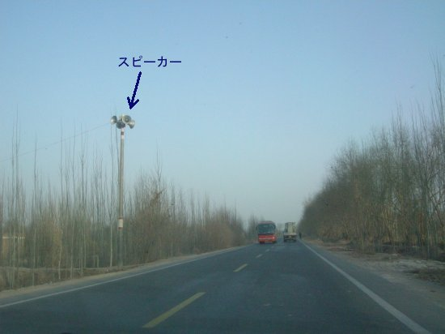
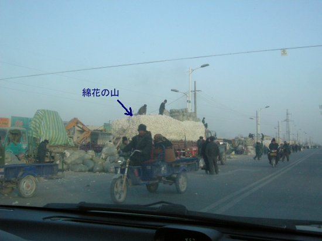

６．再びカシュガルへ（砂漠を見に行く編）

夕暮れまでに、郊外へ砂漠を見に行く事にしました
オアシス都市特有のポプラ並木が続いています
住民の移動手段はロバ車が多い感じ
周辺の民家は干しレンガで出来ていて、夏は涼しく冬は暖かいそうです
民家
友達が呼びに来てるところ？
オアシスとオアシスの間は、平原が広がっています
次のオアシスが見えてきました
オアシスに入ると再び並木が出現
ロバ車も増えてきました

朝夕にコーランを放送するスピーカー
街の活気がでてきました
街にはやはりモスクが

綿花を取引してるようです

上に乗って崩れないのか？
帰途につく人たち
また平原が続きます
そしてだんだん草木が少なくなってきて
待望のタクラマカン砂漠に着きました
観光用の展望台から
既に日没してますが、なんとか間に合った
乗ってきた車と、全面凍結している川の側にいる運転手さん
とにかく寒い、既に氷点下です。
気温が低く呼吸がつらいのでマスクしてました
帰途の街で食べた、カシュガルの「ラグーン麺」
店の人
とにかく砂漠は寒かった！
つづく・・
戻る